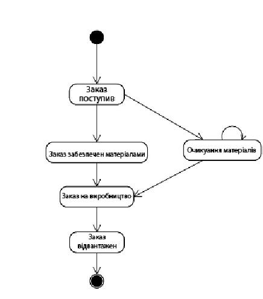

Розробка діаграми становища
Діаграма станів в аналізі вимог використовується, коли вимагається досліджувати поведінку системи, як кінцевого автомата. Це представлення прийшло в иМЬ з теорії систем.
У загальному випадку діаграма станів описує, як система поводиться у більше, ніж одному варіанті використання. Синтаксис діаграм станів багато в чому співпадає з синтаксисом діаграм дій.
Основні компоненти опису системи :
- Прості стани
- Складені стани
- Символи «старт» і «стоп»
- Переходи
- Лінійки синхронізації.
У мові иМЬ під станом розуміється абстрактний метакласс, використовуваний для моделювання окремої ситуації, впродовж якої має місце виконання деякої умови [15]. Стан може бути заданий у вигляді набору конкретних значень атрибутів класу або об'єкту, при цьому зміна їх окремих значень відбиватиме зміну стану модельованого класу або об'єкту.

Рис.6 Діаграма стану
Перехід системи із стану в стан здійснюється при настанні подій. При цьому говориться, що перехід спрацьовує. Перехід може бути безальтернативним, або містити альтернативи. У другому випадку перехід обумовлений настанням сторожових умов. Нарешті, подія може супроводжуватися вираженням дії, яка відбувається у разі, якщо спрацьовує перехід. Повний синтаксис опису переходу(написи на стрілці) наступний:
Подія [сторожова умова] / вираження дії.
Іноді буває корисним об'єднати частину станів в один мета-состояние. Графічно це виглядає, як символ стану(прямокутник з кутами, що округляють), що містить усередині себе декілька символів станів. При цьому можливі переходи між підпорядкованими станами, переходи між підлеглим і зовнішнім станами і переходи між складеним і зовнішнім станом.